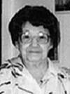

notre ancêtre de la 7ième génération
fiche familiale
 |
Urgel Rivet décède à l'âge de 76 ans. Naissance le 20 avril 1863 à St-Alphonse-Rodriguez, cté Joliette. Baptême le 21 avril 1863 à St-Alphonse-Rodriguez. Parrain Urgel Rivet, marraine Élodie Thériault. Décès le 9 juin 1939 à Laverlochère, cté Témiscamingue. Sépulture le 12 juin 1939 au cimetière de Laverlochère Occupation: Cultivateur. Il a demeuré à St-Alphonse-Rodriguez, en 1900 à St-Ambroise de Kildare et en 1907 il vint s'installer dans le rang II de Laverlochère au Témiscamingue. C'est en 1925 qu'il bâtit la maison au village. Parrain de Noëlla Rivest, de Lucienne Lambert, d'Anne-Marie Rivest et de Fernande Rivest. Père: Joseph RivetMère: Angèle-Angélique Rivais Rivet (sa famille) |
Mariage le 18 juillet 1887 à St-Jacques-de-l'Achigan, cté Montcalm.
Âge de l'époux 24 ans, âge de l'épouse 19 ans.
Âge de l'époux 24 ans, âge de l'épouse 19 ans.
 |
Épouse: Agnès Piquette Piquet décède à l'âge de 94 ans. Naissance le 25 avril 1868 à St-Jacques-de-l'Achigan, cté Montcalm. Baptême le 25 avril 1868 à St-Jacques-de-l'Achigan. Baptisée Marie-Agnès. Parrain Louis Piquette son frère, marraine Emma Gratton. Décès le 1er mai 1962 à Laverlochère, cté Témiscamingue. Sépulture le 3 mai 1962 au cimetière de Laverlochère Elle passa les dernières 15 années chez son fils Donatien où elle y décéda. Marraine de Noëlla Rivest, de Lucienne Lambert, d'Anne-Marie Rivest et de Fernande Rivest. Père: Venance Piquet PiquetteMère: Louise Lafond Personne (sa famille) |
Portrait de la famille d'Urgel Rivet en 1906 à St-Ambroise-de-Kildare

de gauche à droite à partir de la rangée arrière :
Adélard Brisson, Marie-Louise (dite "Louisa"), Blanche, Marguerite, Marie-Anne et Armand
Marie-Rose (dite "Rose"), Urgel, Emilienne, Donatien, Lionel, Agnès Piquette et Lucienne
de gauche à droite à partir de la rangée arrière :
Adélard Brisson, Marie-Louise (dite "Louisa"), Blanche, Marguerite, Marie-Anne et Armand
Marie-Rose (dite "Rose"), Urgel, Emilienne, Donatien, Lionel, Agnès Piquette et Lucienne
| |
Enfant 1 Marie-Louise Rivet décède à l'âge de 38 ans. Naissance le 29 novembre 1888 à St-Alphonse-Rodriguez Baptême le 30 novembre 1888 à St-Alphonse-Rodriguez. Dite "Louisa", baptisée Marie-Louise Mathilda. Parrain Joseph Rivet, marraine Angèle Rivais ses grands parents. Décès le 22 avril 1927 à L'Assomption. Sépulture le 25 avril 1927 à L'Assomption. Mariage le 21 août 1906 à St-Ambroise-de-Kildare, cté Joliette. Conjoint: Adélard Brisson décède à l'âge de 48 ans. Naissance le 12 avril 1886 à St-Ambroise-de-Kildare Baptême le 12 avril 1886 à Ste-Béatrix. Parrain Alexis Rivet, Marraine Clotilde Gariépy. Décès le 27 août 1934 à L'Assomption. Sépulture le 29 août 1934 à L'Assomption. Lors de son décès il était maire de L'Assomption. Père: Moïse Brisson Mère: Lucie Venne |
 |
Enfant 2 Armand Rivet Rivest décède à l'âge de 75 ans. Naissance le 23 avril 1890 à St-Alphonse-Rodriguez, cté Joliette. Décès le 22 février 1966 à Ville-Marie, cté Témiscamingue. Mariage le 24 juin 1912 à St-Isidore de Laverlochère. Conjointe: Ida Brouillard n. 16 février 1892 d. 31 août 1971. (sa famille) |
Enfant 3 Philibert Rivet
décède à l'âge de 10 ans.
Naissance le 15 juillet 1891 à St-Alphonse-Rodriguez.
Baptême le 17 juillet 1891 à St-Alphonse-Rodriguez.
Baptisé Joseph Philibert.
Parrain Venance Piquette, marraine Louise Lafond ses grands parents.
Décès le 14 février 1902 à St-Ambroise-de-Kildare.
Sépulture le 16 février 1902 à St-Ambroise-de-Kildare.
Décédé durant la même semaine que son frère Adrien de la contagieuse diphtérie.
-------------------------------------------------------------------------------
 |
Enfant 4 Marie-Anne Rivet Rivest décède à l'âge de 78 ans. Naissance le 14 octobre 1892 à St-Alphonse-Rodriguez, cté Joliette. Décès le 9 octobre 1971 à l'hôpital Youville de Noranda Mariage le 26 juillet 1909 à St-Isidore de Laverlochère Conjoint: Pierre Lambert n. 21 juillet 1887 d. 25 février 1960. (sa famille) |
 |
Enfant 5 Marguerite Rivet Rivest décède à l'âge de 80 ans. Naissance le 1er mai 1894 à St-Alphonse-Rodriguez, cté Joliette. Décès le 23 septembre 1974 au centre hospitalier de Rouyn-Noranda Mariage le 6 juillet 1914 à St-Isidore de Laverlochère Conjoint: Albert Labelle n. 31 décembre 1889 d. 13 novembre 1974 (sa famille) |
 |
Enfant 6 Blanche Rivet Rivest décède à l'âge de 70 ans. Naissance le 25 février 1896 à St-Alphonse-Rodriguez, cté Joliette. Décès le 16 mai 1966 à Timmins, ON. Mariage le 1er juillet 1913 à St-Isidore de Laverlochère. Conjoint: Rémi Blain n. 16 décembre 1889 d. 13 janvier 1933. (sa famille) |
 |
Enfant 7 Emilienne Rivet Rivest décède à l'âge de 96 ans. Naissance le 20 juillet 1897 à St-Alphonse-Rodriguez, cté Joliette. Décès le 12 septembre 1993 à St-Lambert de Montréal. Mariage le 1er août 1916 à St-Isidore de Laverlochère Conjoint: Bruno Perreault n. 16 septembre 1892 d. 27 février 1975. (sa famille) |
   |
Enfant 8 Lionel Rivest décède à l'âge de 76 ans. Naissance le 7 mai 1899 à St-Alphonse-Rodriguez, cté Joliette. Décès le 13 février 1976 à Ville-Marie, cté Témiscamingue. Mariage le 11 juillet 1921 à St-Isidore de Laverlochère 1ère conjointe: Alice Barriault n. 16 janvier 1899 d. 8 octobre 1962. Mariage le 16 avril 1966 à Notre-Dame-du-Rosaire de Ville-Marie 2ème conjointe: Paula Lemire n. 30 mars 1903 d. 19 janvier 1993. (sa famille) |
Enfant 9 Adrien Rivet
décède à l'âge de 1 an.
Naissance le 20 février 1901
à St-Ambroise-de-Kildare, cté Joliette.
Baptême le 20 février 1901 à St-Ambroise-de-Kildare
Parrain Séraphin Riopel, marraine Philomène Rivet,
son oncle et sa tante.
Décès le 11 février 1902 à St-Ambroise-de-Kildare
Sépulture le 12 février 1902 à St-Ambroise-de-Kildare
Décédé durant la même semaine que son frère Philibert de la contagieuse diphtérie.
-------------------------------------------------------------------------------
 |
Enfant 10 Donatien Rivet Rivest décède à l'âge de 84 ans. Naissance le 20 août 1902 à St-Ambroise-de-Kildare, cté Joliette. Décès le 24 octobre 1986 à Ville-Marie. Mariage le 22 avril 1924 à Notre-Dame-du-Rosaire de Ville-Marie Conjointe: Marie-Anna Ringuette n. 4 février 1901 d. 2 juin 1992. (sa famille) |
|   |
Enfant 11 Marie-Rose Rivet décède à l'âge de 96 ans. Naissance le 31 juillet 1903 à St-Ambroise-de-Kildare, cté Joliette. Décès le 12 mars 2000 à Rouyn-Noranda. Mariage le 15 août 1923 à St-Isidore de Laverlochère Conjoint: Charles Prince n. 15 août 1892 d. 8 juillet 1963. (sa famille) |
Enfant 12 Bernadette Rivet
décède à l'âge de 8 mois.
Naissance le 1er janvier 1905
à St-Ambroise-de-Kildare, cté Joliette.
Baptême le 2 janvier 1905 à St-Ambroise-de-Kildare.
Baptisée Marie Bernadette Séphryna
Parrain Séraphin Morin, marraine Rose-Délima Rivet,
son oncle et sa tante.
Décès le 15 septembre 1905 à St-Ambroise-de-Kildare.
Sépulture le 17 septembre 1905 à St-Ambroise-de-Kildare.
-------------------------------------------------------------------------------
Enfant 13 Lucienne Rivet
décède à l'âge de 2 ans
Naissance le 2 mai 1906
à St-Ambroise-de-Kildare, cté Joliette, Qc.
Baptême le 3 mai 1906 à St-Ambroise-de-Kildare.
Parrain Joachim Valois, marraine Louisa Rivet sa soeur.
Décès le 11 jul 1908 à Laverlochère, cté Témiscamingue, Qc.
Sépulture le 12 juillet 1908 au cimetière de Laverlochère.
-------------------------------------------------------------------------------
Enfant 14 Eléontine Rivet
décède à l'âge de 1 jour.
Naissance le 7 juillet 1907
à St-Ambroise-de-Kildare, cté Joliette.
Baptême le 7 Juillet 1907 à St-Ambroise-de-Kildare.
Parrain Damase Parent, marraine Eléontine Piquette, son oncle et sa tante.
Décès le 8 juillet 1907 à St-Ambroise-de-Kildare, cté Joliette.
Sépulture le 9 juillet 1907 à St-Ambroise-de-Kildare.
-------------------------------------------------------------------------------
Enfant 15 (Anonyme) Rivet
décède à la naissance.
Naissance le 7 juillet 1907
à St-Ambroise-de-Kildare, cté Joliette.
Baptême le 7 juillet 1907 à St-Ambroise-de-Kildare.
Décès le 7 juillet 1907 à St-Ambroise-de-Kildare.
Sépulture le 7 juillet 1907 à St-Ambroise-de-Kildare.
A vécu quelques minutes.
-------------------------------------------------------------------------------
Enfant 16 Marie-Ange Rivet
décède à l'âge de 1 an.
Naissance le 24 mai 1909 à Laverlochère, cté Témiscamingue.
Baptême le 25 mai 1909 à St-Isidore de Laverlochère.
Parrain Armand Rivet son frère, marraine Marie-Anne Rivet sa soeur.
Décès le 31 mars 1910 à Laverlochère, cté Témiscamingue.
Sépulture le 2 avril 1910 au Cimetière de Laverlochère.
-------------------------------------------------------------------------------